Behind the Scenes
In this page we collected the “Behind the Scenes” of our research, i.e., the code-intense part that highlights the reliability of our research and methods. The tasks has been divided equally (you can check the Authors Page) to ensure diversity of ideas and opinions and avoiding bias of any kind in the research.
The notebooks of our repository has been organised in order to provide different aspects and steps in our research and do not necessarily reflect the order of neither this page nor the analysis one.
1) Data Collection
Our main and initial source was the Census.gov API, a comprehensive database on different variables describing the US society. To proceed with our research we initially requested the JSON file using the API Key. The API provided us with the percentage of educational attainment and the number of educational firms in each county.
We decided to change the output to a Pandas data frame for easier layout.
We also used some sources originally presented as CSV or Excel files. We easily imported and opened them using once again the Pandas library.
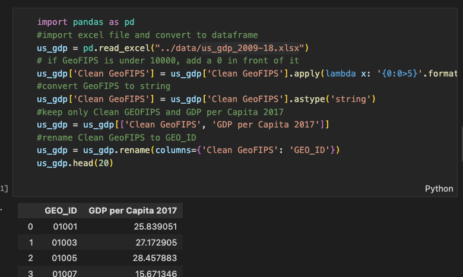2) Data Cleaning
We removed unnecessary columns and kept only data from California for initial analysis. Here are the steps we took to clean the data from the ACS survey database:
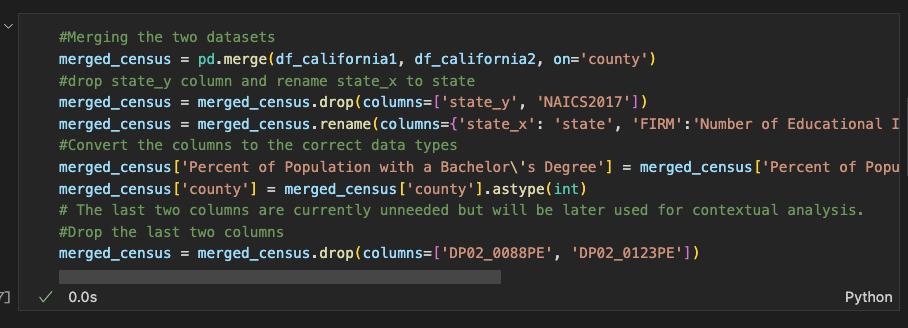Next, we changed the variable types from the ECS Census Database and prepared it to be merged with the other pandas dataframe from the Bureau of Economic data.
3) Data Merging
Based on these two datasets, from the economic and the American Community Survey Census, we merged them and selected California as the first state we were going to take a look at. To avoid possible sources of conflicting data we chose 2017 for both of these census.
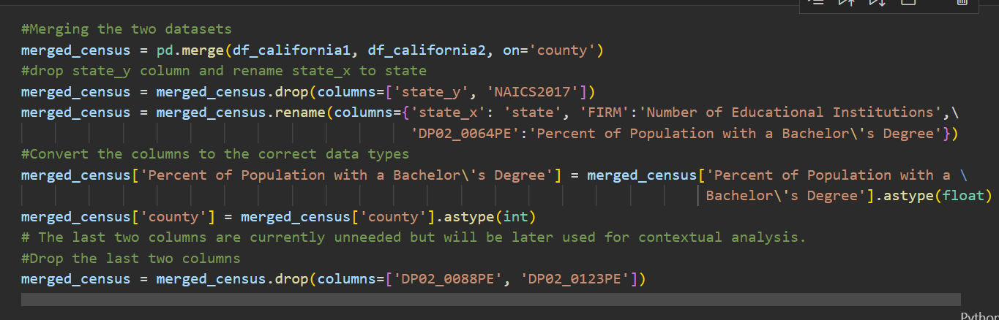The first merge was between the two previously mentioned Census databases based on the county number. We encountered some difficulties as the ECS dataset included more counties than the ACS dataset (48 compared to 40, respectively, for the California state). However, with the given county sample, we were still able to explore trends in California.
4) Transforming our Data
Furthermore, we realized that the US government uses two similar codes on its data to classify each county, GEO_ID and and GEO_FIPS. Thus, we changed the GEO_FIPS column on our merged census pandas dataframe to match the GEO_ID data.
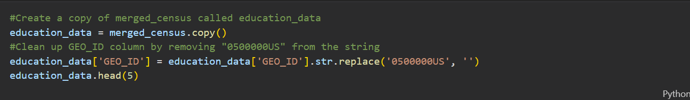This made it possible for us to another dataset which contained National Income from 2009 to 2018 per county based on its GEO_ID. Meaning we could merge it with our pandas dataset which contains info on educational institutions and Percentage of those with a Bachelor’s degree in each county based on the GEO_ID Column.
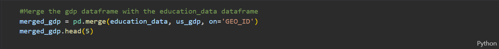With all of this so far, we have been able to create a pandas data frame containing data on each county on education and income using GEO_ID to quickly identify them.
5) Data Visualization
We created scatter plots to easily visualize and identify possible trends between education and salary.
Notebook 5 features scatterplots for all US states, showcasing their GDP per Capita plotted against the Percent of Population with a Bachelor’s degree. The following code was used to create these plots.
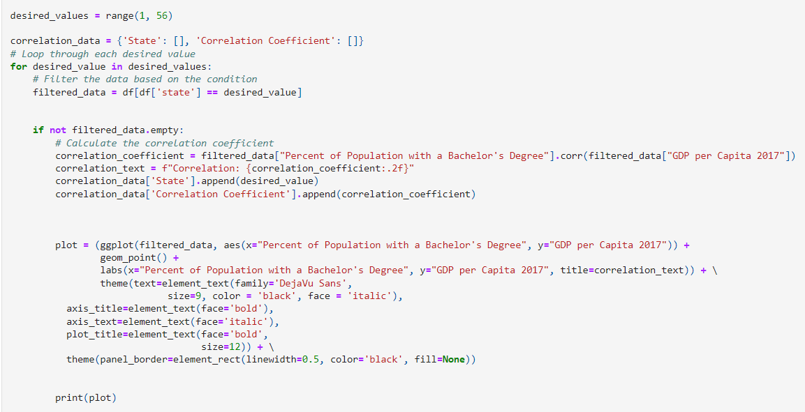Further analysis required identifying the counties with the highest values of GDP per Capita and Percent of Population with a Bachelor’s degree. As you can see below, the original dataframe was sorted into two separate data frames with the 25 highest x and y-values, respectively. The code for the scatterplot was modified to include labels for these counties, showing the US state from which they belong to.
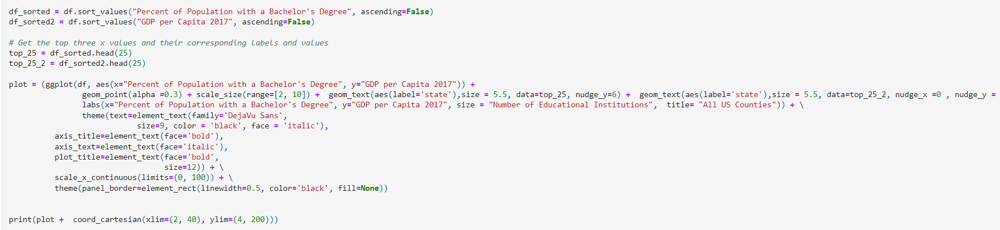In Notebook 5 we also found the states with counties that were amongst the highest GDP per Capita’s and Education Attainment. Below, the ‘common_values’ set is used to store these states and eliminate duplicates. It is then converted to a list, and then the states extrapolated from their numbers using the data frame created in Notebook 2 .
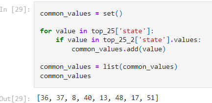6) Forecasting
In Notebook 3 we only focus on the forecasting of the education and GDP trends. To do such analysis we used longer temporal data frames that could picture the situation in the US in the past. The economic data is retrieved from the World Bank, while the college percentage is retrieved from a .xlsx file from the Census.gov. We opened the data and we plotted it out. We had to be careful with the units of measurements. In the first case, for the GDP, the levels were ranging from 200 000 to 600 000, while in the second, the percentages were shifting from 5 to 40. After that, we immediately noticed a positive trend in both elements, as we noted in the analysis. The actual forecast was made through the "Prophet" library, that automatically generates a forecast for the period set. The graph generated shows the forecast with a upper and lower error margin. Before that, we made sure to adapt the data frame to the requirements of the library, i.e. renaming the date to "ds" (after having transformed it to date-time format) and y as the variable.
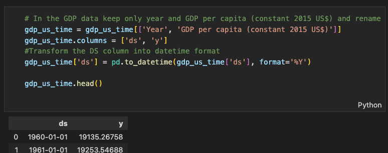We also decided to plot out a line on the year 2020 to highlight the pandemic effects. The code follows.
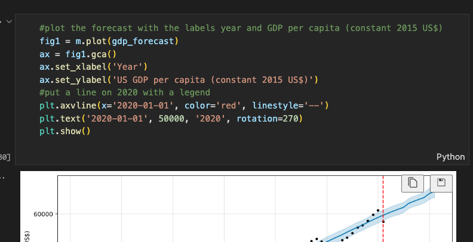Lastly, we merged once again the two forecasts to obtain a single final merged plot, as shown below.
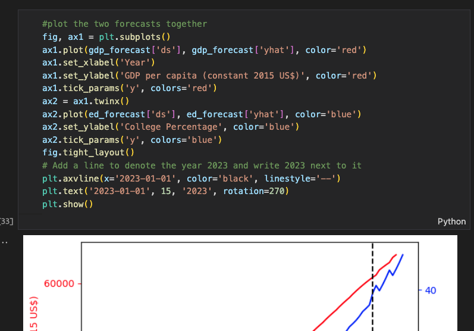Issues and Challenges
- From the Census Bureau, some counties had different percentages of educational attainment
- To solve the issue, if we encountered two or more rows with the same county and state code, we took the average percentage and kept only one row
- From one dataset to the other, we noticed a significant loss in rows: although this might seem an issue, it could just frame reality as there must be counties without educational institutions.
- We proceed our research with 1393 counties instead of the actual 3143, as we thought that the data available are still reliable.